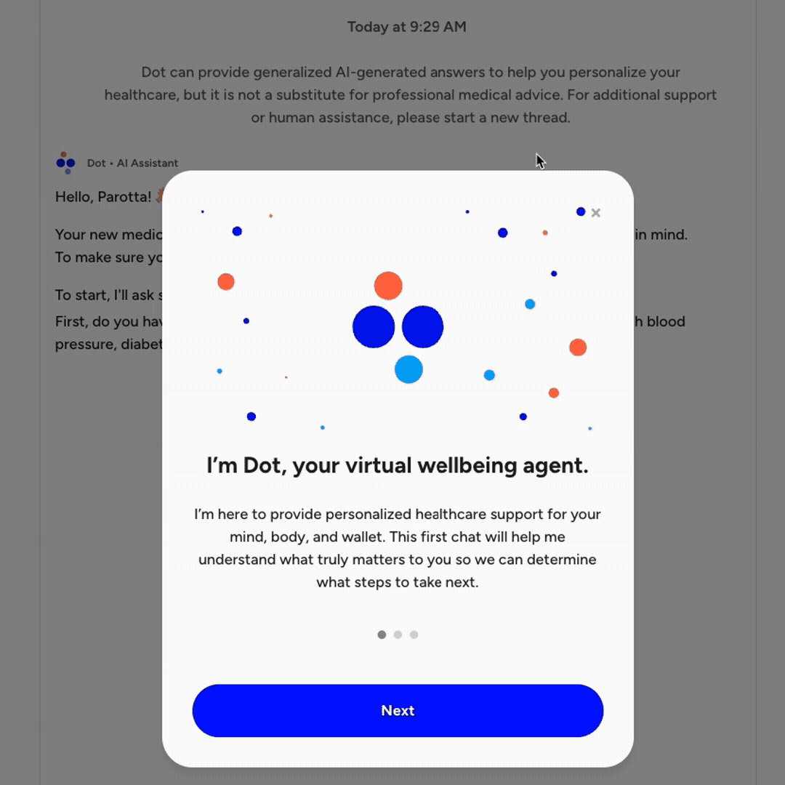

Included Health · AI Platform · 2024–2026
The Dot Platform
How I led the end-to-end design of a multi-agent AI healthcare assistant — from vision to brand to a production-ready product that changed how members navigate their care.

How I led the end-to-end design of a multi-agent AI healthcare assistant — from vision to brand to a production-ready product that changed how members navigate their care.
Lead Product Designer — managing requirements, orchestrating design across 3 parallel workstreams, interaction design, and user validation throughout a year-long initiative.
Year-long initiative across multiple phases: Discovery, Alignment, User Research, and Design & Execution. Launched to first client in January, second client launching in July.
Figma for wireframes and flows, FigmaMake and Cursor for AI prototyping, Langsmith for model evaluation and prompt design, Rally, Marvig and Maze for user research.
Included Health helps major US employers improve employee health literacy, benefits access, and overall wellbeing — affordably. We position ourselves as a modern, AI-powered, human-driven healthcare company.
As we scaled amid rising costs and chronic disease rates, we needed a smarter strategy: proactively connecting patients to the right care before small problems became expensive ones. We needed to go beyond reactive support and build something that could meet members where they were — intelligently, personally, and at scale.

Dot is an AI platform — a network of agents all working together to deliver personalized guidance, helping members navigate and combine their Included Health benefits with their employer-covered benefits.
Key deliverables included:


Ran a 2-day design sprint to surface pain points and desired future states — generating 320 unique concepts that became the foundation for our vision.
Mapped concepts to company strategy and stakeholder goals around AI-driven personalized care. Built and iterated on prototypes until leadership aligned on a shared vision.
Ran validation studies to test hypotheses. Key finding: users were open to AI-guided care, but trust was the biggest barrier to adoption. We designed around that insight.
Designed the first non-deterministic agent-based system at Included Health — modeling a new process for user flows, edge cases, AI prototypes, and phased delivery.
Designing a non-deterministic agent-based system was new territory for our cross-functional team. Drawing on my previous experience building successful GenAI products, I modeled a repeatable process for the team that covered:
In addition to leading Dot's delivery, I trained other senior designers and PMs to adopt this process — scaling design capability across the organization, not just delivering one product.
Dot meaningfully increased the rate at which members connected to and used clinical services — a direct healthcare outcome.
Members using Dot engaged with their benefits at twice the rate compared to those without the AI assistant.
Average satisfaction rating of 4.9/5 per visit — a signal that trust, which we centered our design strategy around, was earned.
The AI Design Culture case study shows how I shaped the way our design org thinks about, builds with, and grows through AI — across the whole organization.
See AI Design Culture →